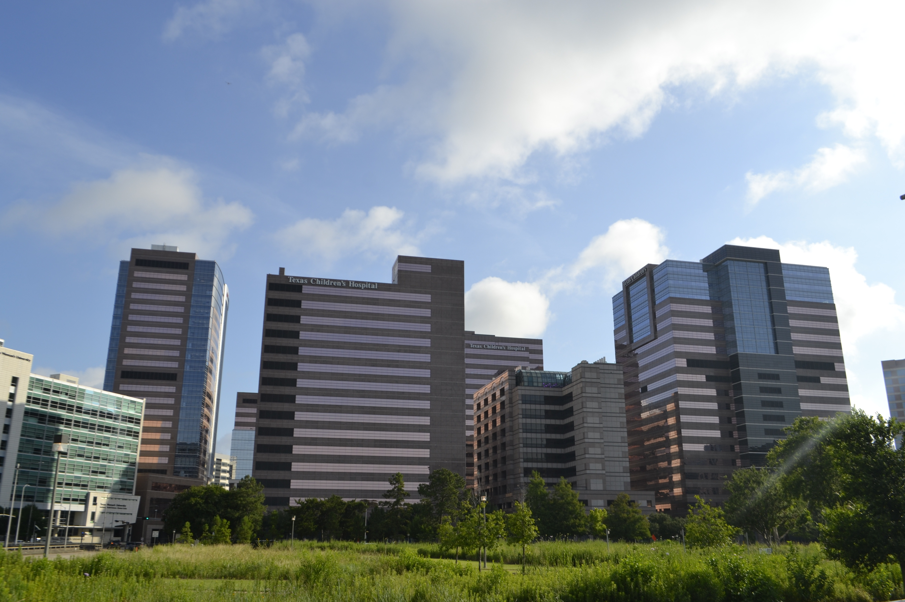
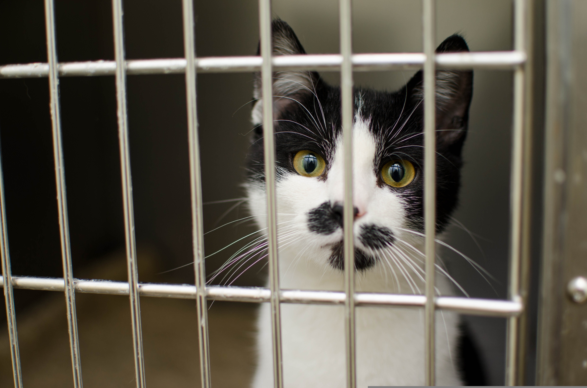

City of Blue Springs Donation Fund is an organization that supports community projects that include public facilities such as public restrooms, parks and infrastructure, creating an enriching and better environment for all blue springs

Interested in animal safety? This is an non-profit animal shelter based on the hopes and dreams of the co-founders child in which his dream was to save and secure animals that didn't have a home. This goal would eventually lead to the rescuing of many animals becoming a reality for their shelter.

This veteran center was designed to benefit those who were injured in military services, becoming a large community that helps those left disabled and providing donated goods, transportation, and medical appointments.

Community Services is one of the easiest ways to help out, either by donation or even simply by giving time. They accept help at all levels and best part is that it helps out people who are desperatly scraping by and connect them to a safer environment. Through help from the community does it allow for people to get through rough times and find financial stability.
Harvester's is a not-for-profit organization that excels in helping feed all the people in the Greater Kansas City Metro. They host a number of food banks all around the metro and serve to any who are in need of food service.
Metro Lutheran Ministry provides food, housing, and basic needs to struggling families. They help low-income individuals in the Kansas City area. This charity directly help people avoid homelessness and hunger and often in dire situations.

Offers rent, utility, and food assistance to prevent a financial crises for families that are facing short term hardships. This overall helps people recover and stay in their homes getting back on their feet

Provides early childhood education, refugee support, and family service. This supports long term success through educaiton and helps refugees adjust to life in the U.S.

Runs food pantries, clothing programs, and job assistance services. Helping people who are experiencing poverty and unemployment, also helping with recovery.

Coordinates housing programs and services to reduce homelessness. Specifically works on helping people find stable ohusing and preventing homelessness long term.

Supports mental health services and access to care across Missouri. This focusses on people with mental health needs, especially those with limited resources. Expanding access to critical mental health care and support services.